The counter and the office, step by step.
Part 1 is for everyone at the counter: taking laundry in, the student's confirmation code, and handing it back. Part 2 is for the admin: the office, students, staff, rules and reports. Staff and admin can use a phone, tablet or computer.
- The order journey
- Signing in
- Taking an order
- Drop-off code
- Pickup and hand-over
- Orders, students, issues
- Admin: overview
- Admin: register & export
- Admin: students
- Admin: staff
- Admin: rules & pricing
- Admin: stats, reports, log
The order journey
Two confirmations protect the laundry and the student: one when the clothes come in, one when they go out. Each time the student reads a code from their phone and you type it in.
Part 1 · At the counter
For staff and the admin.
Signing in
- Sign in with the username and temporary password the admin gave you.
- Choose your own password the first time.
- The counter has five tabs: New order, Pickup, Orders, Students, Issues. On a computer they are on the left, with today's numbers.
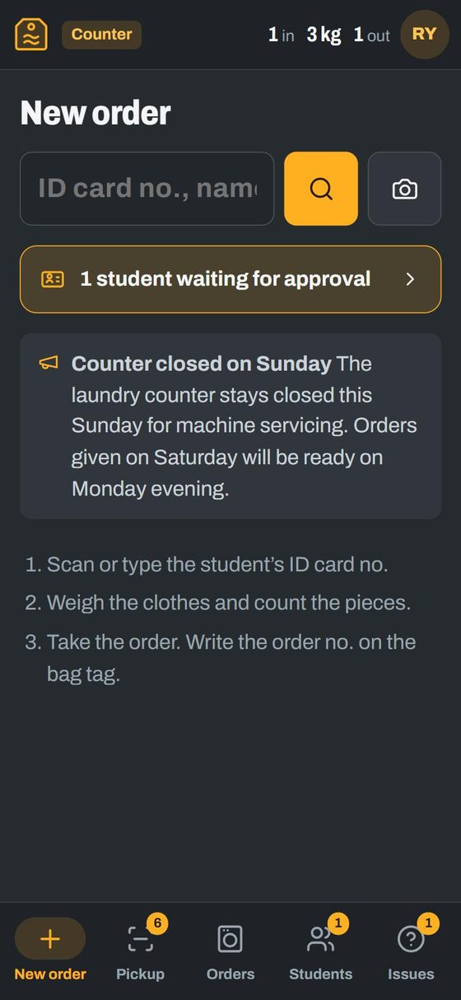
New order: scan or type the ID card
Taking an order
- Find the student: scan their ID QR (camera button), or type the ID card no., name or room.
- New student waiting for approval? Check their ID card on the university portal, then Details match, approve.
- Choose the service, enter the weight and count every piece.
- Basket card: type only the number, for example 256. The letters are added for you (A256). The box says if the card is free, already on a basket, or not usable, and offers the next free card.
- Read the green or orange box: free, or what to collect at pickup. Then Take order.
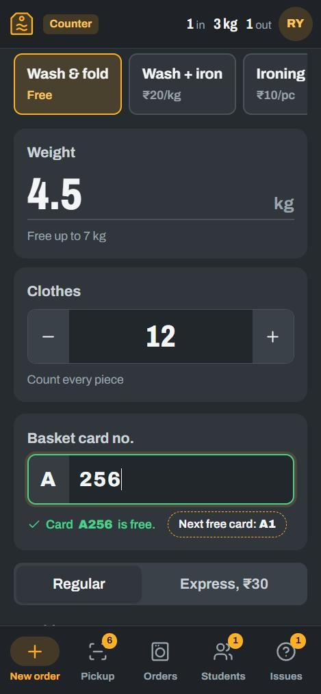
Weight, clothes and the basket card
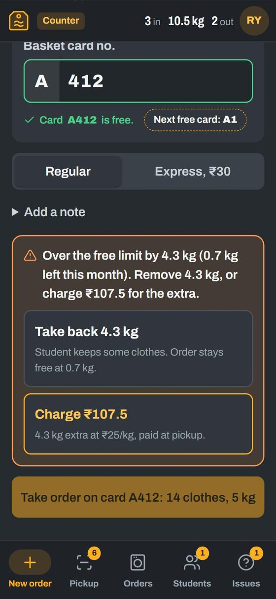
Over the free limit: take back or charge
The student confirms the drop-off with a code
Right after Take order, a pop-up opens on the student's phone with what they gave and a 6-digit code. Your screen shows a code box.
- Ask the student to check the details on their phone and read you the code.
- Type the 6 digits. It confirms by itself, then tap Next student.
- Codes change every 30 seconds; one read out a moment ago still works. After 5 wrong tries, press Send a new code.
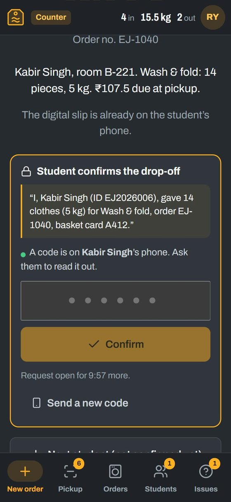
Type the code from the student's phone
Pickup and hand-over
- Open Pickup and scan the QR on the student's slip. It changes every 30 seconds, so screenshots are refused.
- No QR? Type the basket card no. (just the number works) or the order no., and check their ID card.
- Check the face matches the photo on screen.
- Count the clothes back. If the count differs, write why. Collect any amount due (cash or UPI).
- Press Hand over: ask for the code. A pop-up with a code opens on the student's phone.
- The student checks their clothes and reads the code. Type it: the order is handed over (and any payment saved) at that moment.
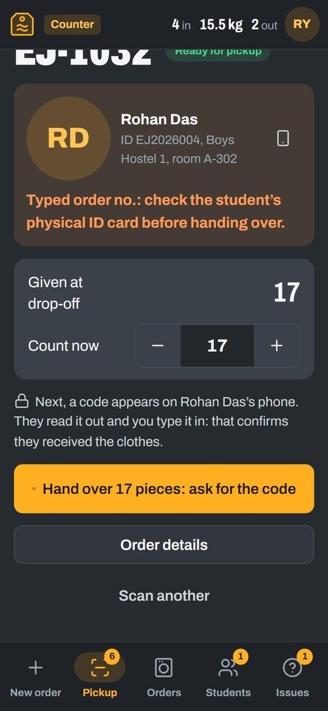
Count back, then ask for the code
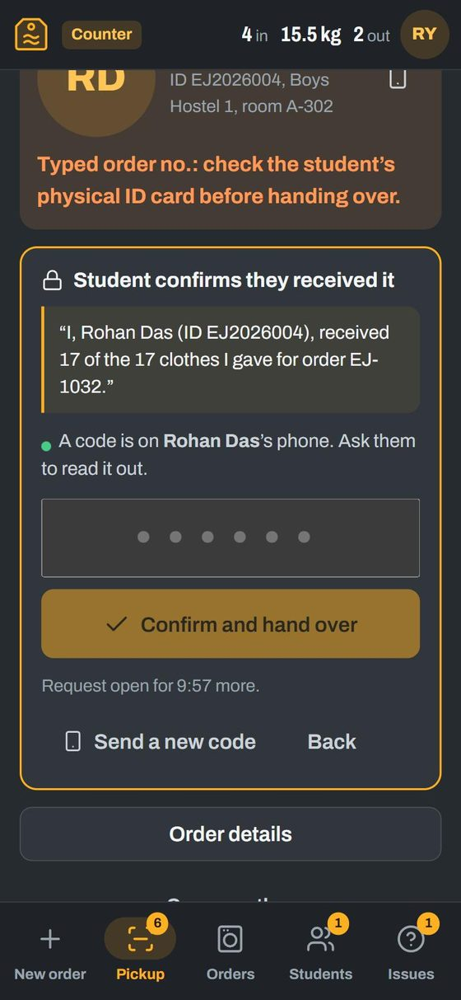
Type the code: handed over
Orders, students and issues
Part 2 · The office (admin)
The admin opens the office on a computer or phone. Open the counter switches to the counter screens.
Overview
- Today in one sentence: orders in, kg, handed back, washing, waiting on the shelf.
- Orders chart by day, week or month.
- Needs attention: approvals, late orders, uncollected laundry, complaints, money due, drop-offs not confirmed by the student and disputed ones. Tap a line to open the list.
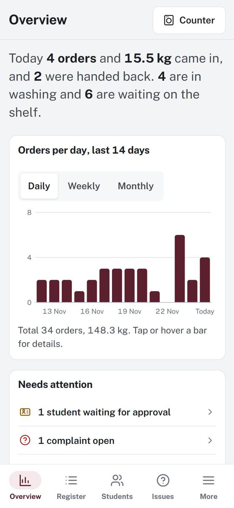
Overview
Register and Excel export
- Every order, like the old register book. Filter by date, status, hostel, payment, Drop-off not confirmed or Disputed by student.
- The Student confirmed column shows In ✓ and Out ✓ when the student gave the code.
- Excel downloads the filtered list, including the confirmations.
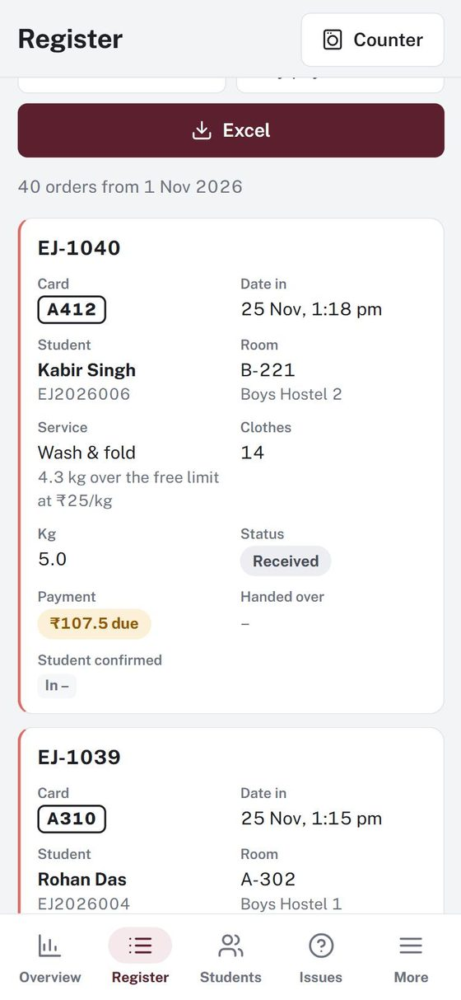
Register on a phone
Students
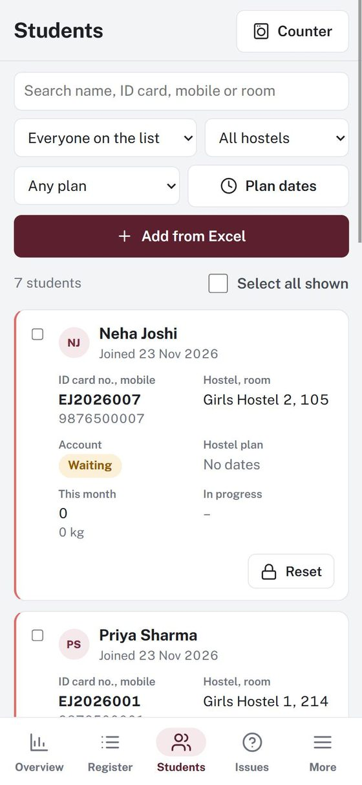
Students
Staff
Rules & pricing
Seven tabs. Change what you need, then press Save rules.
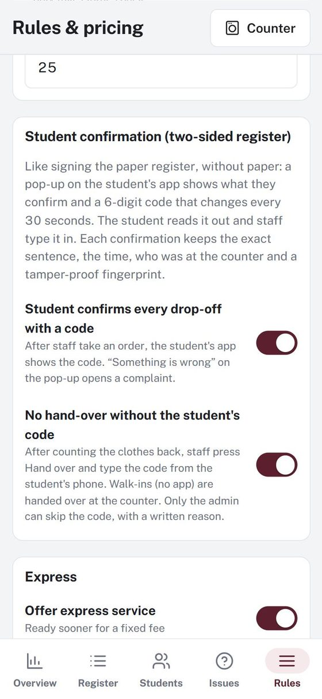
The student confirmation switches
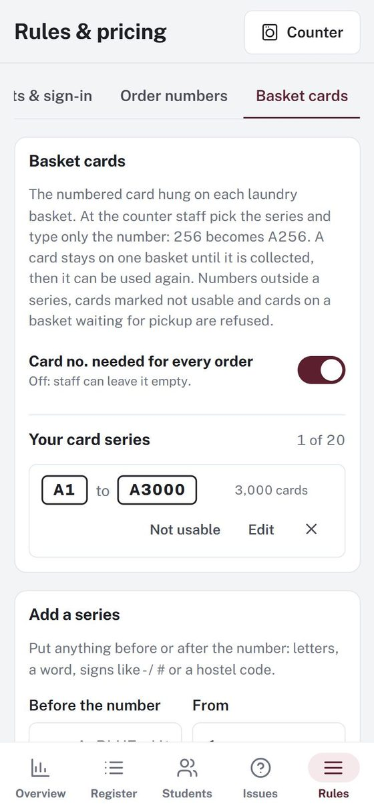
Basket card series
Stats, reports, notices and activity log
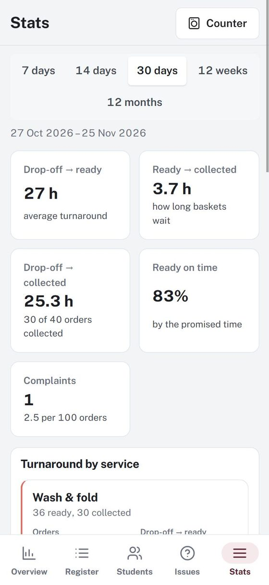
Stats
Everjoy Lawndry · Staff and admin guide